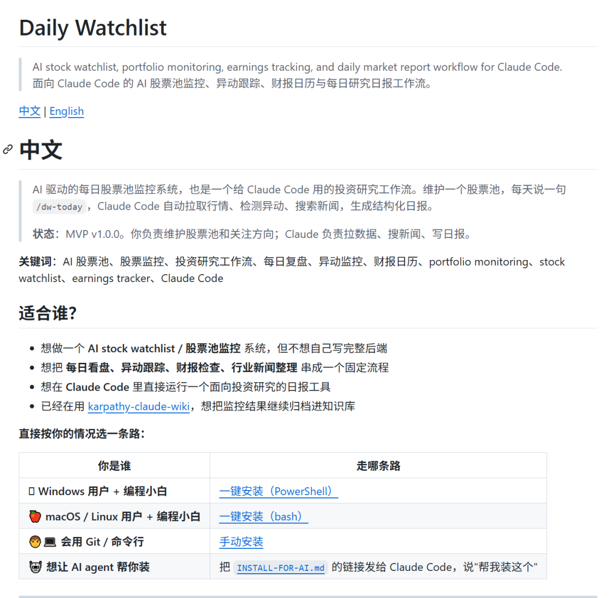
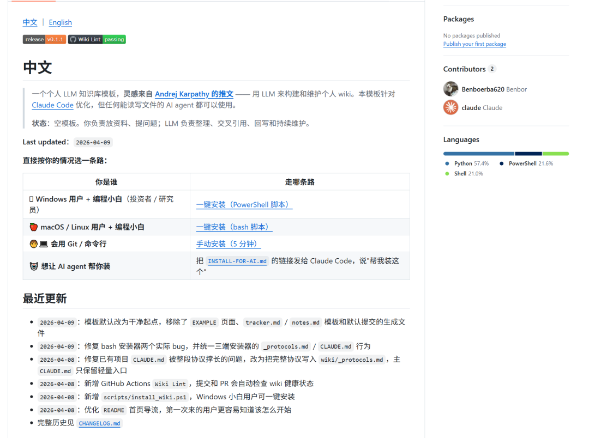

点关注不迷路
之前写了几篇 Claude Code 的投研教程，主要介绍思路和模块设计。但后台陆续收到一些朋友的反馈——思路看懂了，落地的时候还是得和 AI 来回对话好几轮才能跑通，有没有更直接的方式？
上周是一个契机。看到 Karpathy 发了一条关于用 AI 维护个人 wiki 的推文，我试着搭了一个，发现出奇好用，就想办法把它整理成模板传到了 GitHub 上。几个朋友去试了，真的一键装上了，这件事给了我挺大的鼓舞——原来我做的东西是可以直接给别人用的。
于是就有了一个想法：把之前教程里比较好用的模块逐步都搬上去，而且相互之间预留好接口。比如今天发的股票监控系统，就预留了和个人 wiki 的接口，装了 wiki 的人可以直接把异动归档进去。
我的 GitHub：github.com/Benboerba620
先说两个已经上线的项目
Daily Watchlist——每日股票池监控
就是之前那篇教程里的"每日股票监控系统"，现在可以直接装了。
你导入一个股票池，每天说一句 /dw-today，Claude Code 自动拉行情、检测异动、搜新闻、查财报日历、按你的关注方向搜行业新闻，最后生成一份结构化日报。免费 API 每天 250 次请求，监控 100 只股票绰绰有余。
地址：github.com/Benboerba620/daily-watchlist


Karpathy Wiki——个人知识库模板
上周那篇教程写过了。纯 markdown，不用数据库，Claude Code 直接读写。打开 Claude Code 复制一句话进去，问你 4 个问题，1-2 分钟装完。
地址：github.com/Benboerba620/karpathy-claude-wiki

两个项目可以联动——Daily Watchlist 的异动归档可以选择自动写入 Wiki 对应的公司条目。以后上的模块也都会预留这种接口，最终是一套可以自由拼装的工具箱。
大家如果一键安装发现能用，好用，求点一颗右上角的Star！
一个理科生的工程师梦
说一点题外话。
我本科和研究生都是学金融的，但高中其实是理科生。当年本科选专业的时候，招生办老师还建议我去信科，但本着"分数够了不用白不用"的心态，硬着头皮去了经院。还有一个原因就是高中同学学信息竞赛的太厉害了，都是什么全国金牌、省队之类的，他们高中都学了三年了，不想到了本科还得被他们暴虐。当时的我还是有点怂的。
我爸是工程师。小时候的记忆里，我在卧室睡觉，他在旁边的电脑上通宵画图——用 CAD 画火车零部件，我也看不懂，但就知道我爸技术很厉害，厂里碰到解决不了的问题都得打电话找他去，才能搞定。大概是从那时候起，心里就埋了一颗种子。
后来也试过学 Python。买了从零入门的书，"Hello World"打完之后，每次都倒在 for 循环。不是学校环境，没人逼，也不知道学到什么时候才能做出一个有用的东西，真的没有动力从头啃。
但现在不一样了。AI 能力的突飞猛进，让我有个点子就能快速、低成本地实现。这种"创造"的乐趣——然后再用工程师的思维去优化，做减法，让它变得最简洁可用——这种感觉真的太爽了。而且不是自 high，写出来的东西朋友们真的能用。不用再死记硬背语法格式，不会因为少打一个空格就报错。
for 循环我到现在也不会写。但这不妨碍我把一个完整的项目放到 GitHub 上，而且别人能一键安装。
GitHub 是一座宝库
除了自己做东西，GitHub 上还有一件事让我特别兴奋：学习别人的项目。开源社区，大家都把自己好的idea和项目拿出来，随便复制，随便用，真的非常开放。
以前看开源项目是有门槛的——代码看不懂，文档又是英文。现在可以让 AI 帮你解析，不用学技术细节，直接学架构和设计思路：为什么它要这么分层？这个模块为什么要拆出来？各种产品和功能都会以另一种拆开的方式展现出来，真的非常有意思。
举个例子。我弄完个人 wiki 的第二天，就发现了一个更风靡的类似项目叫 Graphy，它有一个"节点注意力机制"——能追踪你最近关注的知识节点在往哪个方向偏移。我把这个思路抄了过来，现在我的周报会自动提示我：你最近的注意力偏到哪里去了。而它的其他内容更偏向于代码库的项目，不适用于我的投研知识库。
这种"拆别人的东西 → 理解它为什么好用 → 把好的部分拿回来改造"的循环，是以前不会写代码的时候完全做不到的。
而且这个过程反过来又加深了我对 AI 的理解——它现在能做什么，还做不了什么，处在什么阶段。2026 年大概是 AI 推理和应用落地从 0 到 10 的一年，明年可能就是 100，我的想象力已经不够用了。
想认识更多有趣的人
原先我的圈子主要是二级投研的朋友。但接触 GitHub 之后发现，开发者也是一个很有意思的群体——和投研圈一样，开放，愿意分享，敢想敢做，天花板还很高。
我觉得现在是一个审美和想象力最值钱的时代。坦诚地交流有趣的 idea，就是最高生产力的活动。希望能慢慢认识一些有趣的开发者，大家相互交流想法，增长见识。
后续计划
之后我有空会继续把之前CC投研教程实现的功能模块逐步上传，比如业绩季自动化、研究协作系统这些。大家下一个希望我上传哪些模块，也可以留言。
如果大家使用过程中碰到问题，最高效的方式是去 GitHub 的 Issues 区提，这样我修完之后所有人都受益。当然直接私信、留言也行。
欢迎关注，欢迎拍砖。
我的 GitHub：github.com/Benboerba620
声明：所有工具均为个人开源项目，非推广。投资有风险，AI 工具不构成投资建议。